"Not saved" refusals: one look of their own
Drawn 5 Nov 26 for your D1665 · on the real app · your PC's size (1536 wide) and your iPhone's (402) · tap any picture to see it full size
The question, Q1: the app's four "not saved" refusals each say it their own way today. Should all of them take the one look drawn below? In short: a red "no entry" sign, the first words in bold, the reason after them in quieter grey, on a dark red box with a red edge. The words stay as they are.
My recommendation: yes, build it as drawn.
Why: it lays its words out the way the "Not saved" band does (a sign, then bold, then quieter), so it reads as part of the same family. But it is red with a "no entry" sign, where the band is amber with a warning triangle. So a refused change never reads as "the app can't save — keep this page open". It also has no Retry button, because a refused change has nothing to try again. Every colour is one the app already uses for its Leave War refusals; nothing new is added.
What these messages are, and how often you'll see them
A refusal is the app saying "no" to one change: that change is dropped and nothing else is touched. The "Not saved" band is different: it means the app can't save at all.
All four refusals are safety nets, so you will rarely see them. The figure box and Grades messages show only if your rights change while the box is open (on another device, once the app has its database). The schedule's message shows only if a window forgets to give its own reason. The document message shows only when the phone's storage is full.
1 · A Leave War figure box (Balances page)
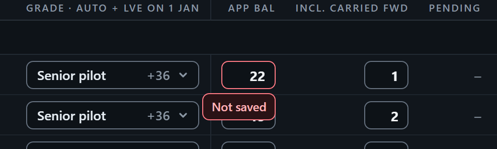
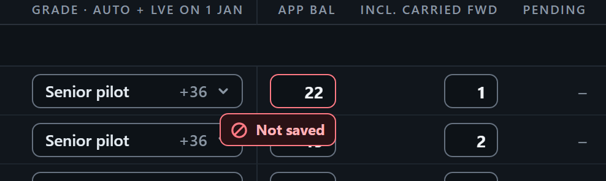
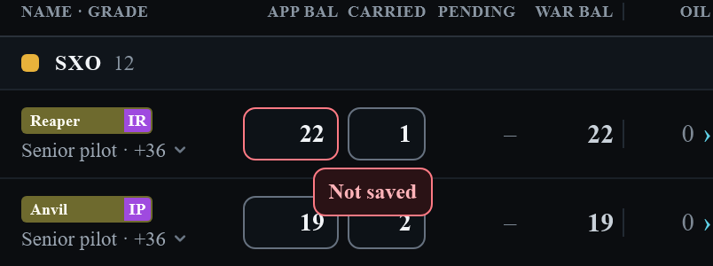
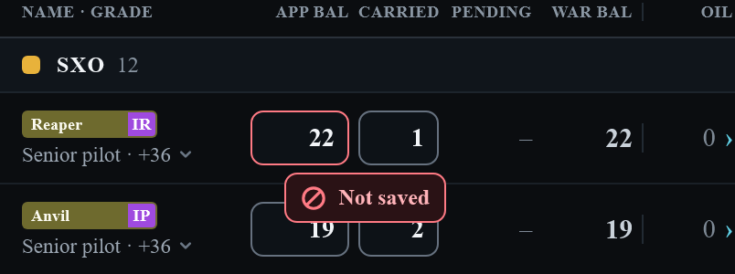
The same box's passing note: when the box leaves the screen with a figure still typed in, and the figure is refused (a lock landing while he types)
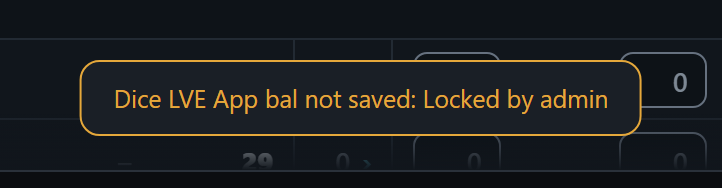
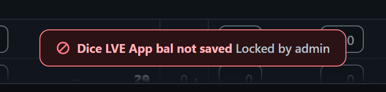
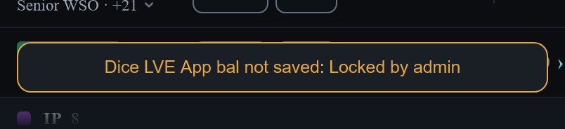
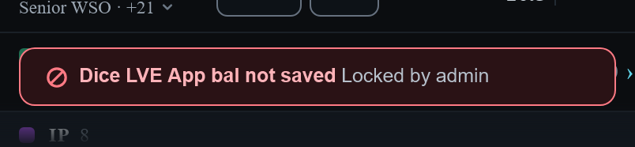
2 · The Grades window (a grade's name or days)
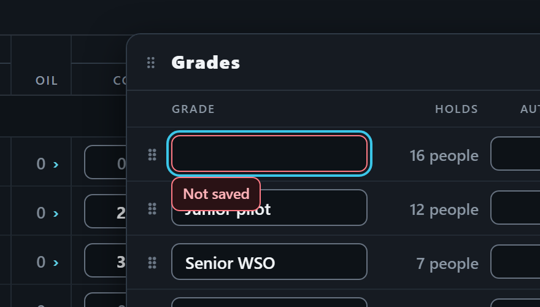
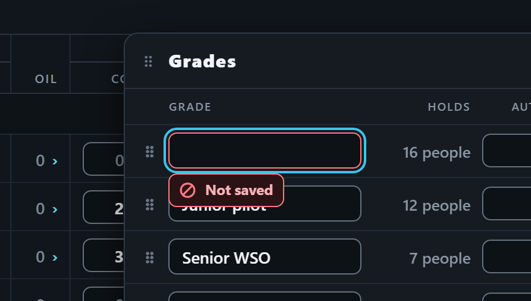
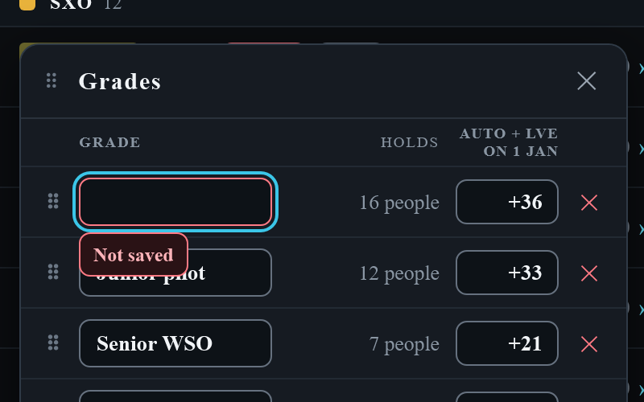
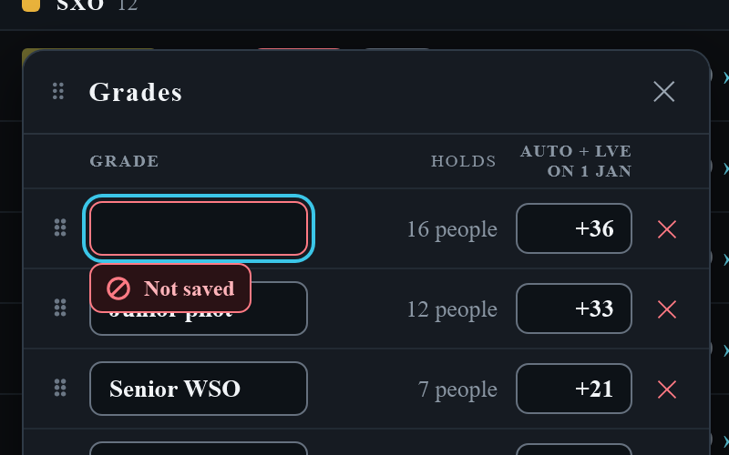
3 · The schedule's refused change (passing note)
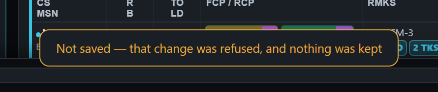
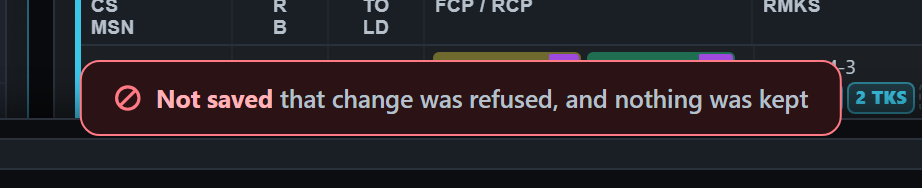
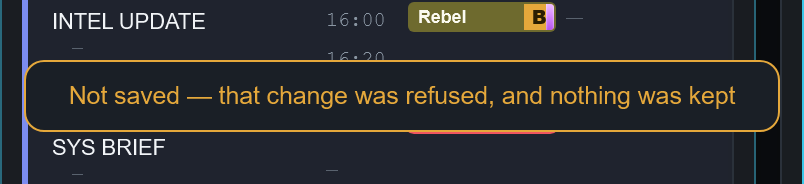
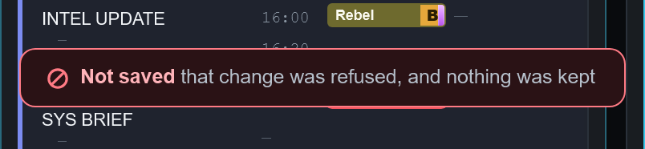
Its other wording: "Not saved — that change is not yours to make"
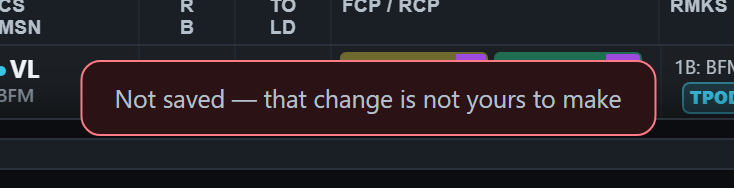
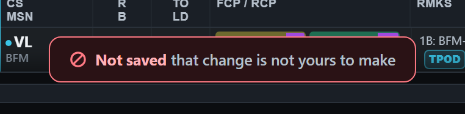
Where the note sits: whole screen, unchanged (the foot on a PC, the top on an iPhone)
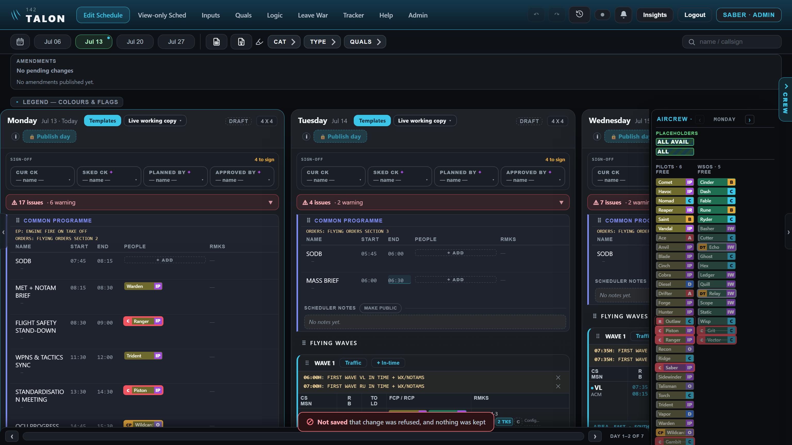
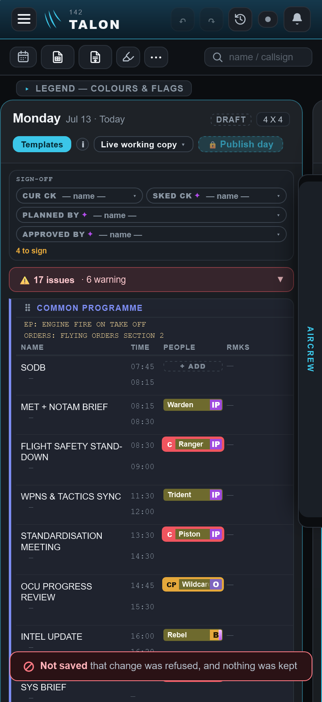
4 · A document too big to store (adding a file to an input)
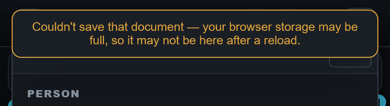
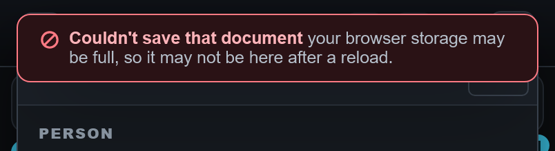
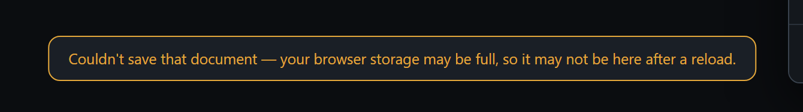
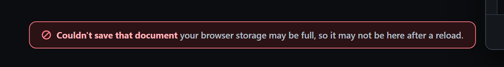
What stays as it is
- Every word. Only the look changes. In a passing note, the dash between the bold words and the rest is still read out to a screen reader but not drawn, the same as the band.
- Where each message sits, how big it is and how long it stays. The tag stays under its box, and the passing note stays at the foot of a PC screen and the top of an iPhone screen.
- The "Not saved" band: amber, with its warning triangle and Retry, as you approved it on 5 Nov 26.
- The app's other refusals ("Only a scheduler can…" and the like) keep today's amber passing note. Your D1665 covers the "not saved" ones only. If you'd like every refusal to take this red look later, that's a separate question, and I'd draw it first.